Which controller do I have?
Look at the controller ID on your box, or in the app at Settings → This controller. Then tap your type in the bar at the top of this page. The manual then shows only your type.
| ID starts with | Type | Motor runs on |
|---|---|---|
| DJ-DC-… or DJ-0… | DC Solar | Solar panels |
| DJ-AC1-… | AC Single phase | 230 V mains (EB) power |
| DJ-AC3-… | AC Three phase | 415 V three phase mains (EB) power |
The middle letters tell what is fitted:
| Letters | Kit | Example |
|---|---|---|
| VM | Valves + motor | DJ-DC-VM-0012DJ-AC1-VM-0012DJ-AC3-VM-0012 |
| M | Motor only (fills a tank or well, no valves) | DJ-DC-M-0013DJ-AC1-M-0013DJ-AC3-M-0013 |
| V | Valves only (no motor) | DJ-DC-V-0014DJ-AC1-V-0014DJ-AC3-V-0014 |
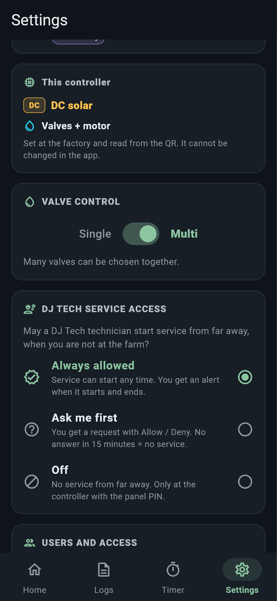
Install the app
- On your Android phone, open djtechinnovation.in/app and download the DJ Irrigation app.
- Tap the downloaded file and tap Install.
- If the phone asks, allow "Install unknown apps" for your browser or WhatsApp.
- Open the app. Choose English or தமிழ் at the top.
Link your phone (first time)
The first phone that links to the box becomes the Admin (owner). Nobody can control your motor without scanning the QR of your box.
- Tap I am the owner.
- Scan the QR given with your controller (on the box or on the card from DJ Tech).
Camera not working? Type the Controller ID and the Pairing code shown under the QR, and tap Continue. - Type your name, email, mobile number and farm location, then tap Become owner.


Turn on alerts
Right after linking, the app shows a page with a big bell.
- Tap Turn on alerts.
- Android asks "Allow DJ Irrigation to send notifications?" – tap Allow.
- Next it asks to run in the background – tap Allow again. (Oppo, Vivo, Realme and Xiaomi phones stop apps to save battery. Then alerts come late.)
You then get an alert for a motor trip, rain, timer start / end, cyclic timer ON / OFF and controller offline, and for every power cut and power return – even when the phone is locked and the app is closed.

Home page
| Part | What it shows |
|---|---|
| Top | Greeting, your name, farm name and controller ID. |
| Dots | Server and Controller: green = connected. Auto = timers run the motor. Admin = your role. |
| Motor | RUNNING (green) or STOPPED (red), with current (A) and voltage (V). NO POWER (red) = power cut, the timer waits for the power. While starting, it shows STARTING (Star). |
| Emergency stop | Red button – stops the motor and closes the valves at once. |
| Field & Valves | Picture of your field. Blue = water flowing. V1–V10 show ON / OFF. The electric pole brings power to the motor. A red ✗ on the pole = power cut. |
| Power supply | Mains power ON or OFF now, since when, a 24-hour bar and the cuts today (see Power cards). |
| People / Today | Who uses this farm, and what happened today. |
| Solar powerPower supply (dial)3 phase power | Solar panel voltage, motor current and power, batteryMains voltage, frequency, motor current and power, energy (kWh)R / Y / B voltage and current, Star-Delta step, energy (kWh). |
| Motor protection | OK, or the reason of a trip (shown in red). |
| Rainfall / Next timer | Rain today in mm. The timer running now or the next one. Tap to open Timers. |
| Wi-Fi | The controller's internet and signal strength. |
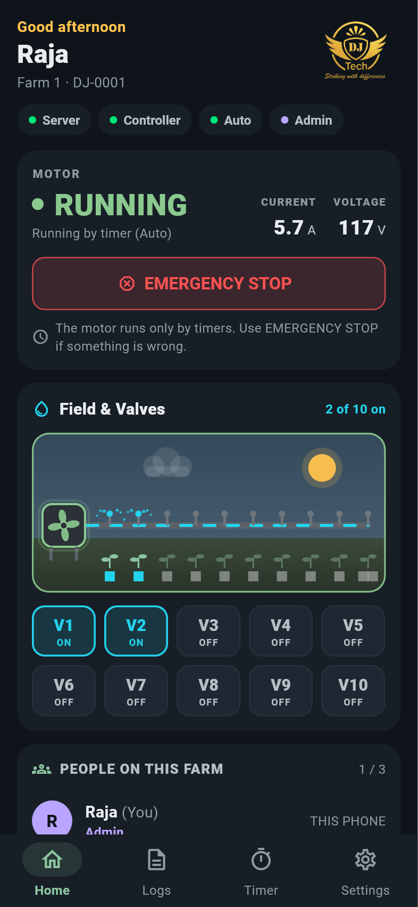
Motor only box (kit M)
A motor only box has no valves. Home shows the motor and a water tank instead of the valves. Timers and the cyclic timer run the motor alone.
A valves only box (kit V) has no motor. Home shows the valves only. Timers open and close the valves.
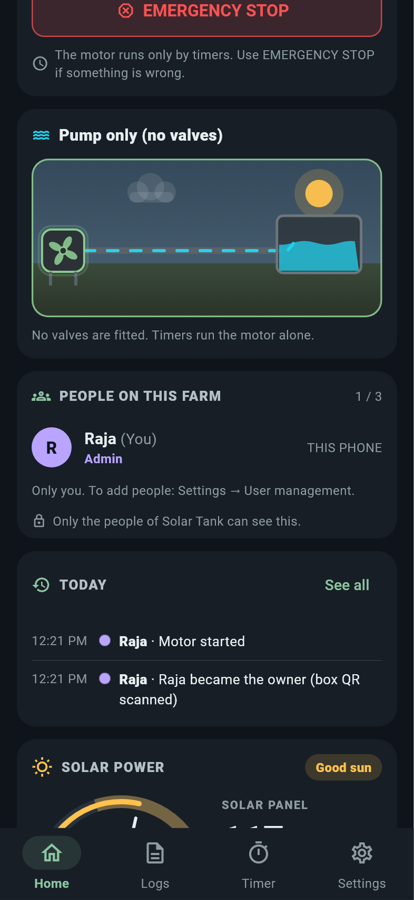
Solar power cardPower cards3 phase power card
Scroll down on Home to the Solar power card.
| Part | What it shows |
|---|---|
| Dial | Solar panel voltage now. The pill on top says Good sun or Low sun. Below it: the voltage where the motor stops. |
| Motor current | Current now (A). The bar fills up to the trip limit. |
| Motor power | Power now (kW) and the motor state. |
| Solar energy today | Energy from the panels today (kWh). |
| Battery | Battery of the controller (V), Good or Low. |
| Today ring | Hours of good sun today, hours the motor ran, and how many times low sun stopped the motor. |
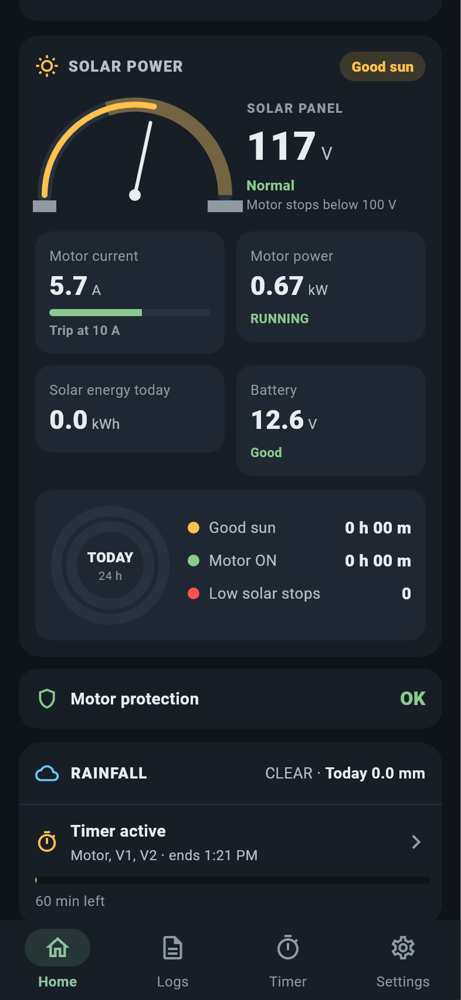
1. Power supply
Below the field picture.
- ON (green) or OFF (red): is there mains power now, and since when.
- The 24-hour bar: green = power was there, red = power cut.
- Today: hours with power and the number of power cuts.
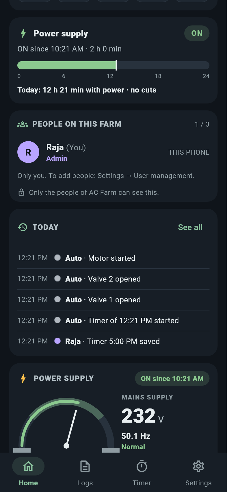
2. Power supply dial
| Part | What it shows |
|---|---|
| Dial | Mains voltage now (about 230 V) and frequency (Hz). Normal, Low or High, and the safe range. |
| Motor current | Current now (A). The bar fills up to the trip limit. |
| Motor power | Power now (kW). |
| Energy today | Energy used today (kWh), and yesterday. |
| Backup battery | The small battery that keeps the controller and the valves working in a power cut. |
| Today ring | Hours with power, hours the motor ran, and the number of power cuts today. |
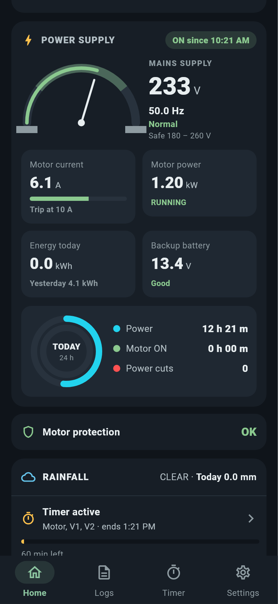
2. 3 phase power
| Part | What it shows |
|---|---|
| R · Y · B | Voltage (about 415 V) and current (A) of each phase. |
| Phase order | R-Y-B OK, or Reversed (red). The motor never starts with a wrong phase order. |
| Unbalance | How different the 3 phases are (%). Small is good. |
| Frequency | About 50 Hz. |
| Starter | Star-Delta: STAR · 5 s, then DELTA · RUNNING. Direct start (DOL, below 5 HP): no STAR / DELTA row. (See Motor starter.) |
| Motor power / Energy | Power now (kW), energy today and yesterday (kWh). |
| Backup battery | Keeps the controller and the valves working in a power cut. |
| Motor current | Average current, and the trip limit. |
| Today ring | Hours with power, hours the motor ran, and the number of power cuts today. |
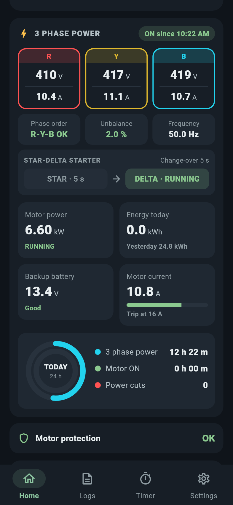
Power cut
When the mains power fails during a timer, the controller stops the motor. The timer keeps its end time. When the power comes back, the controller waits a short time and starts the motor again by itself.
Example: a timer from 9:00 to 10:00 AM.
| Time | What happens | Alert on your phone |
|---|---|---|
| 9:00 | Valves open, 5 s later the motor starts. | Timer started |
| 9:15 | Power fails. The motor stops at once. The valves stay open (backup battery). | "Power failed, motor stopped at 9:15 AM" |
| 9:30 | Power is back. The controller waits (for example 60 s). | – |
| 9:31 | The motor starts again. | "Power resumed, motor started at 9:31 AM" |
| 10:00 | The timer ends as normal: motor stops, 5 s later the valves close. | Timer finished |
- The wait time (30 s to 2 min) protects the motor when the power goes on and off quickly. Change it in Settings → Motor protection → Restart after a power cut.
- If the power is still off at the timer's end time, the timer ends and the valves close.
- A power cut is not a fault. You do not need to reset anything.
- Every power cut and return is saved in the Logs, with the time.
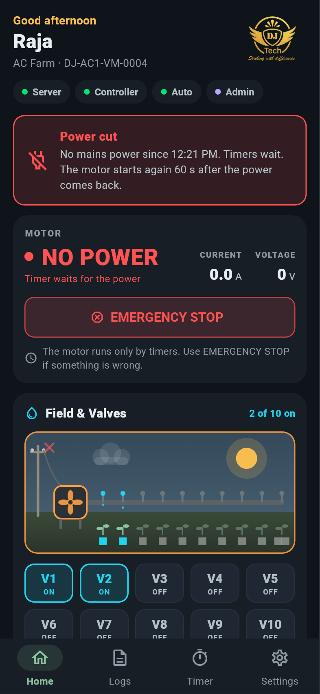
Timers
- Tap Timer at the bottom, then + Add timer.
- On time: tap the pencil and pick the start time.
- Duration: choose hours and minutes. The app shows "Until …".
- Start the motor: keep it on. Turn it off only when water flows by gravity or from a tank.
- Choose the valves (V1–V10) to open.
- Tap Save timer.
Each timer has a switch to turn it on or off, and a ⋮ menu to edit or delete it. Daily timers repeat every day.
Motor only box: there are no valves to choose. The timer runs the motor alone.
Valves only box: there is no motor switch. The timer opens the valves.
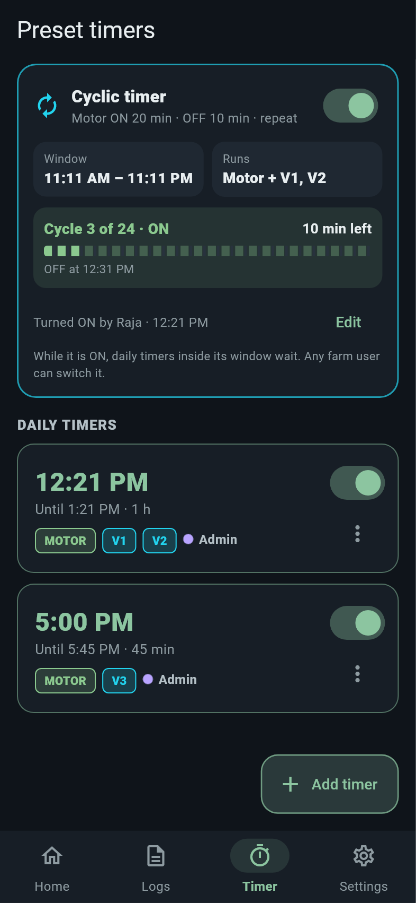

Cyclic timer
The cyclic timer runs the motor ON and OFF again and again inside a time window.
Example: 6:00 AM to 6:00 PM, motor ON 20 min, OFF 10 min. That is 24 cycles a day. The motor runs 8 hours and rests between cycles.
- Tap Timer at the bottom. The Cyclic timer card is at the top.
- Tap Edit (or turn on its switch the first time).
- Set the Window: Start and End time, and the days.
- Set Motor ON for and Motor OFF for with − and +. The app shows the number of cycles.
- Choose the valves that open in the ON part. (Not shown for a motor only box.)
- Tap Save cyclic timer.
- The card shows the cycle now, for example "Cycle 3 of 24 · ON, 10 min left".
- Any user of the farm can switch it ON or OFF. The card shows who did it and when. Everybody on the farm gets an alert.
- While it is ON, daily timers inside its window wait (they do not run).
- Safe order every cycle: valves ON, wait 5 s, motor ON. Motor OFF, wait 5 s, valves OFF.
- It waits during rain stop, a motor trip or DJ Tech service. In a power cut the cycle pauses. When the power is back (after the wait time), it goes on with the cycle that is due now. When the sun is too low, the motor stops (Solar low) like a normal timer.
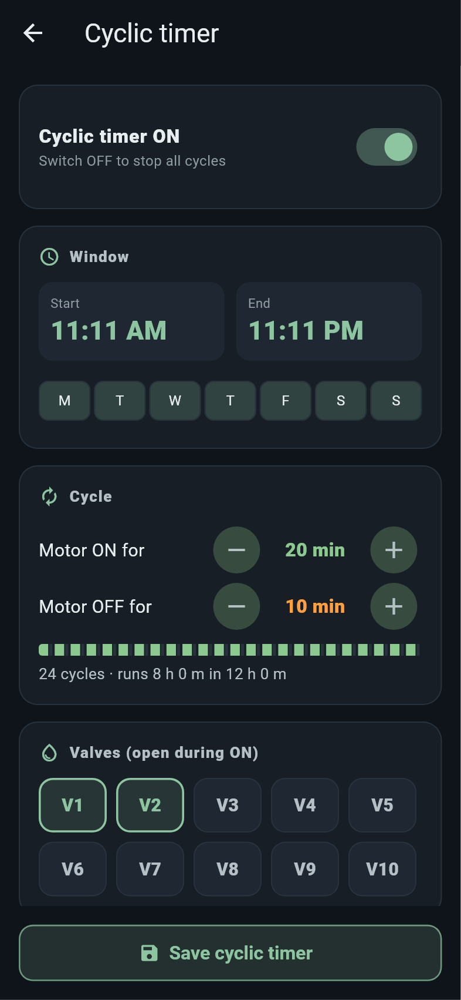
Logs
Tap Logs at the bottom. You see everything that happened, newest first: motor start and stop, valves, timers, cyclic timer, trips, rain, power cuts, settings changes, who did it and when.
Use the logs to check, for example, "Did the 6:00 AM timer run today?" or "When did the power go off?"

Settings and PIN
- Tap Settings. Type the PIN and tap Unlock.
- The first PIN is 8888. Change it at once (tap Change in the orange box), so children or others cannot change settings.
| In Settings | Use |
|---|---|
| Account | Your details and your Customer ID (DJC-…). Tell this ID when you call DJ Tech. |
| Language / Appearance | English or Tamil; Light or Dark screen. |
| This controller | Your type (DC SolarAC Single phaseAC Three phase) and kit. View only. |
| Motor protection | Trip limits (see Motor protection). |
| Notifications / Permissions | Which alerts you get and how (see Alert settings). |
| Wi-Fi | Connect the controller to Wi-Fi or a LAN cable. |
| Valve control | Single = one valve at a time. Multi = many together. (Not shown for a motor only box.) |
| User management | Invite family members (see Add family members). |
| DJ Tech service access | When a technician may work from far away (see DJ Tech service). |
Motor protection
The controller stops the motor by itself to protect it. Settings → Motor protection.
| Protection | Stops the motor when… |
|---|---|
| Motor overload | the current is too high for longer than the delay. |
| Dry run | the current is too low (no water in the well) for longer than the delay. |
| Solar low | the solar voltage is too low. |
| Low voltage | the mains voltage is too low for longer than the delay. |
| High voltage | the mains voltage is too high for longer than the delay. |
| Phase failure / reverse | one phase is missing, or the phase order is wrong. |
| Voltage unbalance | one phase is much lower or higher than the others. |
| Rain | it rains (so the field is not watered twice). |
Restart after a power cut: the wait time before the motor starts again (30 s to 2 min). Backup battery low only warns you. It does not stop the motor.
Use − and + to change a limit, then tap Save all settings.

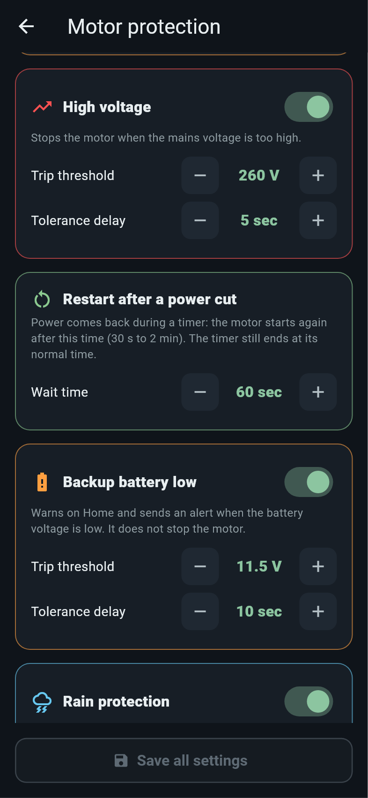
Motor starter: DOL or Star-Delta
DJ Tech sets the starter of your motor panel when the controller is made:
| Starter | Motor | How it starts |
|---|---|---|
| Direct start (DOL) | Below 5 HP | The motor starts at once. Home shows no STAR / DELTA row. |
| Star-Delta | 5 HP and above | Starts in STAR for a few seconds (soft start), then DELTA (full power). Home shows STAR · 5 s, then DELTA · RUNNING. |
You see your starter in Settings → Motor protection. If you change the motor or the panel, only the Admin can change it, with two checks:
- Settings → Motor protection → Star-Delta starter → tap Change.
- Choose Star-Delta starter or Direct (DOL).
- Set the STAR time with − and + (allowed: 2 to 15 seconds). Tap Next.
- The app shows Now: … and New: …. Check it and tap Change.
It is saved at once (not with "Save all settings") and written in the Logs.
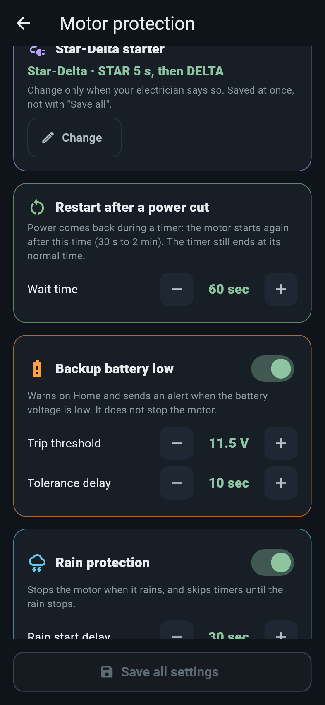
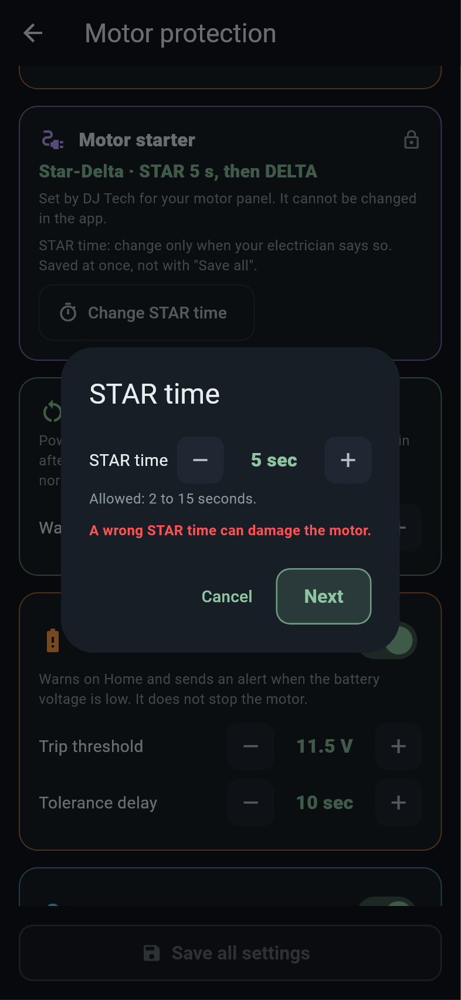
Alert settings
Settings → Notifications. Alerts reach you in 3 ways. Each has its own switch, tone and Vibrate switch:
- While the app is open – a banner with a sound.
- When the screen is off – the screen turns on and the alert shows on the lock screen.
- Over other apps – a pop-up on top of WhatsApp, YouTube and others.
The Power cut switch turns the power failed / power resumed alerts on or off.
Tap Test sound or Test in 10 s (then lock the phone) to check.

Add family members
Up to 3 phones per controller: the Admin and 2 users. Only the Admin can invite or remove.
- Admin: Settings → User management → Invite user.
- Type the person's name and email (mobile number is optional) → Make invite.
- A QR and an invite code appear. Show the QR, or tap Share invite to send the code on WhatsApp. It works once, for 10 minutes.
- New user: install the app → I have an invite → scan the QR or type the code.


DJ Tech service
A DJ Tech technician can test your motor and valves (service mode). At the farm, the technician scans a code on the controller. From far away, it depends on your choice in Settings → DJ Tech service access:
| Always allowed | Service can start any time. You get an alert when it starts and ends. |
| Ask me first | A card with Allow / Deny appears on Home. Answer within 15 minutes. |
| Off | Only service at the farm. |
During service, the app shows "SERVICE MODE ACTIVATED" and is locked. Timers pause and run again when service ends. Everything is saved in the logs.


Emergency stop
If something is wrong (pipe burst, wrong valve, people in the field), tap the red EMERGENCY STOP on Home and confirm.
The controller stops the motor first, waits 5 seconds, then closes the valves – the safe order for your pipes. The next timer runs as normal.
In a power cut, EMERGENCY STOP also cancels the restart: the motor will not start again when the power comes back.
Problems and answers
| Problem | What to do |
|---|---|
| No alerts | Tap the red strip on Home, or Settings → Permissions. Allow notifications and "run in background". Check Silent / Do Not Disturb. |
| "Controller" dot is not green | The box has no internet. Check power at the farm and the Wi-Fi router. Settings → Wi-Fi to change the network. |
| Motor stopped by itself | Look at Home → Motor protection and the Logs. They show the reason (overload, dry run, solar low, rainoverload, dry run, low or high voltage, rainoverload, dry run, low or high voltage, phase failure, phase reverse, unbalance, rain). |
| Motor shows NO POWER | There is a power cut (EB). Nothing to do. The motor starts again by itself when the power comes back, if the timer is still running. |
| "Phase reverse" | The phase order changed (for example after EB work). Call your electrician to swap two phases. The motor does not start until it is correct. |
| A daily timer did not run | Is the cyclic timer ON? Daily timers inside its window wait. Also check rain stop and the Logs. |
| Forgot the Settings PIN | Call DJ Tech support with your Customer ID. |
| New phone | Ask the Admin to send a new invite. If you are the Admin and lost the phone, call DJ Tech. |
| App is old | The app shows "New version" – download it again from djtechinnovation.in/app and install over the old one. Your data stays. |
என் கண்ட்ரோலர் எந்த வகை?
உங்கள் பெட்டியில் உள்ள கண்ட்ரோலர் ID-ஐப் பாருங்கள், அல்லது ஆப்பில் அமைப்புகள் → இந்த கண்ட்ரோலர். பிறகு இந்தப் பக்கத்தின் மேலே உள்ள பட்டையில் உங்கள் வகையைத் தட்டவும். கையேடு உங்கள் வகையை மட்டும் காட்டும்.
| ID தொடக்கம் | வகை | மோட்டார் இயங்குவது |
|---|---|---|
| DJ-DC-… அல்லது DJ-0… | DC சோலார் | சோலார் பேனல்கள் |
| DJ-AC1-… | AC சிங்கிள் பேஸ் | 230 V EB மின்சாரம் |
| DJ-AC3-… | AC த்ரீ பேஸ் | 415 V த்ரீ பேஸ் EB மின்சாரம் |
நடுவில் உள்ள எழுத்துகள் என்ன பொருத்தப்பட்டுள்ளது என்று சொல்லும்:
| எழுத்து | கிட் | உதாரணம் |
|---|---|---|
| VM | வால்வுகள் + மோட்டார் | DJ-DC-VM-0012DJ-AC1-VM-0012DJ-AC3-VM-0012 |
| M | மோட்டார் மட்டும் (தொட்டி / கிணறு நிரப்ப, வால்வு இல்லை) | DJ-DC-M-0013DJ-AC1-M-0013DJ-AC3-M-0013 |
| V | வால்வுகள் மட்டும் (மோட்டார் இல்லை) | DJ-DC-V-0014DJ-AC1-V-0014DJ-AC3-V-0014 |
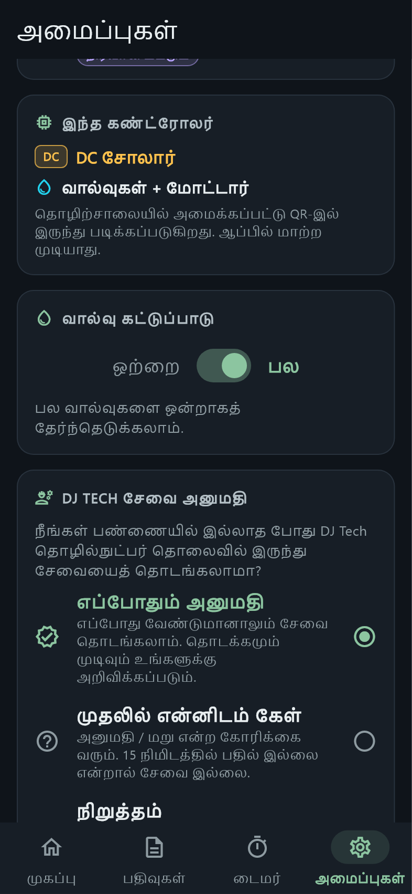
ஆப்பை நிறுவுதல்
- உங்கள் Android போனில் djtechinnovation.in/app திறந்து DJ Irrigation ஆப்பைப் பதிவிறக்கவும்.
- பதிவிறக்கிய கோப்பைத் தட்டி Install தட்டவும்.
- போன் கேட்டால், உங்கள் பிரவுசர் அல்லது WhatsApp-க்கு "Install unknown apps" அனுமதிக்கவும்.
- ஆப்பைத் திறந்து மேலே தமிழ் தேர்வு செய்யவும்.
போனை இணைத்தல் (முதல் முறை)
பெட்டியுடன் முதலில் இணையும் போன் நிர்வாகி (Admin) ஆகும். உங்கள் பெட்டியின் QR-ஐ ஸ்கேன் செய்யாமல் யாரும் உங்கள் மோட்டாரை இயக்க முடியாது.
- நான் உரிமையாளர் தட்டவும்.
- கண்ட்ரோலருடன் கொடுக்கப்பட்ட QR-ஐ ஸ்கேன் செய்யவும் (பெட்டியில் அல்லது DJ Tech அட்டையில்).
கேமரா வேலை செய்யவில்லையா? QR-க்கு கீழே உள்ள Controller ID மற்றும் Pairing code உள்ளிட்டு தொடர் தட்டவும். - உங்கள் பெயர், மின்னஞ்சல், மொபைல் எண், பண்ணை இடம் உள்ளிட்டு உரிமையாளர் ஆகு தட்டவும்.


எச்சரிக்கைகளை இயக்குதல்
இணைத்தவுடன், பெரிய மணி படத்துடன் ஒரு பக்கம் தோன்றும்.
- எச்சரிக்கைகளை இயக்கு தட்டவும்.
- Android "அறிவிப்புகளை அனுமதிக்கவா?" என்று கேட்கும் – Allow தட்டவும்.
- அடுத்து பின்னணியில் இயங்க அனுமதி கேட்கும் – மீண்டும் Allow தட்டவும். (Oppo, Vivo, Realme, Xiaomi போன்கள் பேட்டரி சேமிக்க ஆப்களை நிறுத்தும். அப்போது எச்சரிக்கை தாமதமாகும்.)
பிறகு மோட்டார் டிரிப், மழை, டைமர் தொடக்கம் / முடிவு, சுழற்சி டைமர் ஆன் / ஆஃப், கண்ட்ரோலர் ஆஃப்லைன், மற்றும் ஒவ்வொரு மின்தடை, மின்சாரம் திரும்புதல் ஆகியவற்றுக்கு எச்சரிக்கை வரும் – போன் பூட்டியிருந்தாலும், ஆப் மூடியிருந்தாலும்.

முகப்பு பக்கம்
| பகுதி | என்ன காட்டும் |
|---|---|
| மேலே | வணக்கம், உங்கள் பெயர், பண்ணை பெயர், கண்ட்ரோலர் ID. |
| புள்ளிகள் | சர்வர், கண்ட்ரோலர்: பச்சை = இணைப்பு உள்ளது. ஆட்டோ = டைமர்கள் மோட்டாரை இயக்கும். நிர்வாகி = உங்கள் பங்கு. |
| மோட்டார் | இயங்குகிறது (பச்சை) அல்லது நின்றது (சிவப்பு), கரண்ட் (A), வோல்டேஜ் (V). மின்சாரம் இல்லை (சிவப்பு) = மின்தடை, டைமர் மின்சாரத்துக்காகக் காத்திருக்கும். தொடங்கும்போது தொடங்குகிறது (ஸ்டார்) என்று காட்டும். |
| அவசர நிறுத்தம் | சிவப்பு பொத்தான் – மோட்டாரை நிறுத்தி வால்வுகளை உடனே மூடும். |
| வயல் & வால்வுகள் | உங்கள் வயல் படம். நீலம் = தண்ணீர் ஓடுகிறது. V1–V10 ஆன் / ஆஃப். மின் கம்பம் மோட்டாருக்கு மின்சாரம் தரும். கம்பத்தில் சிவப்பு ✗ = மின்தடை. |
| மின் விநியோகம் | இப்போது மின்சாரம் ஆன் அல்லது ஆஃப், எப்போது முதல், 24 மணி நேரப் பட்டை, இன்றைய மின்தடைகள் (மின்சார அட்டைகள்). |
| மக்கள் / இன்று | இந்தப் பண்ணையைப் பயன்படுத்துபவர்கள், இன்று நடந்தவை. |
| சோலார் மின்சாரம்மின் விநியோகம் (டயல்)3 பேஸ் மின்சாரம் | சோலார் பேனல் வோல்டேஜ், மோட்டார் கரண்ட், சக்தி, பேட்டரிமின்னழுத்தம், அதிர்வெண் (Hz), மோட்டார் கரண்ட், சக்தி, மின் அளவு (kWh)R / Y / B வோல்டேஜ், கரண்ட், ஸ்டார்-டெல்டா நிலை, மின் அளவு (kWh). |
| மோட்டார் பாதுகாப்பு | சரி, அல்லது டிரிப் காரணம் (சிவப்பில்). |
| மழை / அடுத்த டைமர் | இன்றைய மழை (mm). இப்போது இயங்கும் அல்லது அடுத்த டைமர். தட்டினால் டைமர்கள் திறக்கும். |
| Wi-Fi | கண்ட்ரோலரின் இணையம் மற்றும் சிக்னல். |
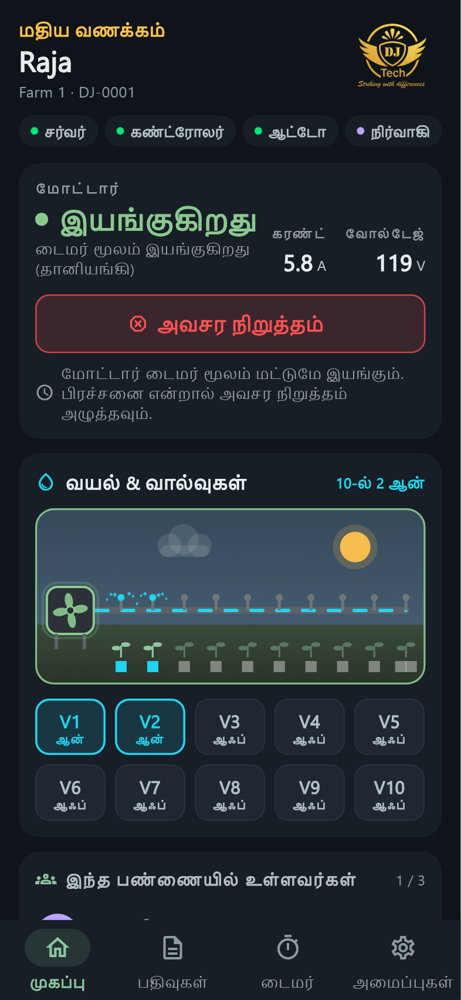
மோட்டார் மட்டும் பெட்டி (கிட் M)
மோட்டார் மட்டும் பெட்டியில் வால்வுகள் இல்லை. முகப்பில் வால்வுகளுக்குப் பதில் மோட்டார் மற்றும் தண்ணீர் தொட்டி தெரியும். டைமர்களும் சுழற்சி டைமரும் மோட்டாரை மட்டும் இயக்கும்.
வால்வுகள் மட்டும் பெட்டியில் (கிட் V) மோட்டார் இல்லை. முகப்பில் வால்வுகள் மட்டும் தெரியும். டைமர்கள் வால்வுகளைத் திறந்து மூடும்.
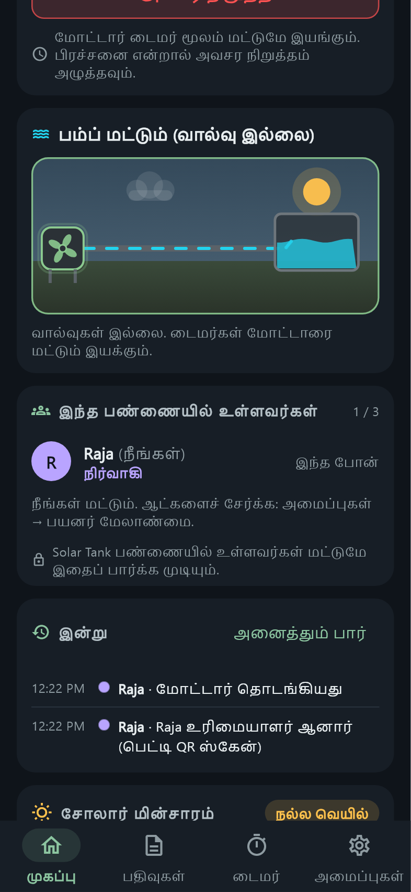
சோலார் மின்சார அட்டைமின்சார அட்டைகள்3 பேஸ் மின்சார அட்டை
முகப்பில் கீழே சோலார் மின்சாரம் அட்டைக்குச் செல்லவும்.
| பகுதி | என்ன காட்டும் |
|---|---|
| டயல் | இப்போதைய சோலார் பேனல் வோல்டேஜ். மேலே நல்ல வெயில் அல்லது குறைந்த வெயில். கீழே: மோட்டார் நிற்கும் வோல்டேஜ். |
| மோட்டார் கரண்ட் | இப்போதைய கரண்ட் (A). பட்டை டிரிப் வரம்பு வரை நிரம்பும். |
| மோட்டார் சக்தி | இப்போதைய சக்தி (kW), மோட்டார் நிலை. |
| இன்றைய சோலார் மின் அளவு | இன்று பேனல்கள் தந்த மின் அளவு (kWh). |
| பேட்டரி | கண்ட்ரோலர் பேட்டரி (V), நன்று அல்லது குறைவு. |
| இன்று வட்டம் | இன்று நல்ல வெயில் நேரம், மோட்டார் ஓடிய நேரம், குறைந்த வெயிலால் மோட்டார் நின்ற முறைகள். |
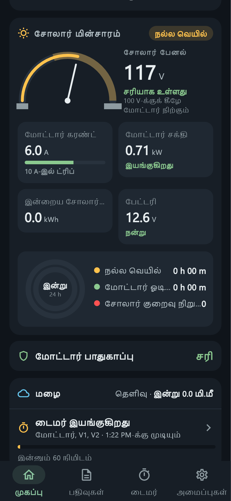
1. மின் விநியோகம்
வயல் படத்துக்குக் கீழே.
- ஆன் (பச்சை) அல்லது ஆஃப் (சிவப்பு): இப்போது மின்சாரம் உள்ளதா, எப்போது முதல்.
- 24 மணி நேரப் பட்டை: பச்சை = மின்சாரம் இருந்தது, சிவப்பு = மின்தடை.
- இன்று: மின்சாரம் இருந்த நேரம், மின்தடைகளின் எண்ணிக்கை.
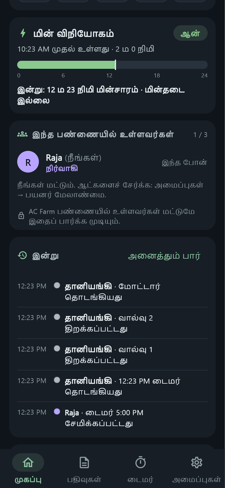
2. மின் விநியோக டயல்
| பகுதி | என்ன காட்டும் |
|---|---|
| டயல் | இப்போதைய மின்னழுத்தம் (சுமார் 230 V), அதிர்வெண் (Hz). சரியாக உள்ளது, குறைவு அல்லது அதிகம், பாதுகாப்பான அளவு. |
| மோட்டார் கரண்ட் | இப்போதைய கரண்ட் (A). பட்டை டிரிப் வரம்பு வரை நிரம்பும். |
| மோட்டார் சக்தி | இப்போதைய சக்தி (kW). |
| இன்றைய மின் அளவு | இன்று பயன்படுத்திய மின் அளவு (kWh), நேற்றையதும். |
| பேக்கப் பேட்டரி | மின்தடையின்போது கண்ட்ரோலரையும் வால்வுகளையும் இயக்கும் சிறிய பேட்டரி. |
| இன்று வட்டம் | மின்சாரம் இருந்த நேரம், மோட்டார் ஓடிய நேரம், இன்றைய மின்தடைகள். |
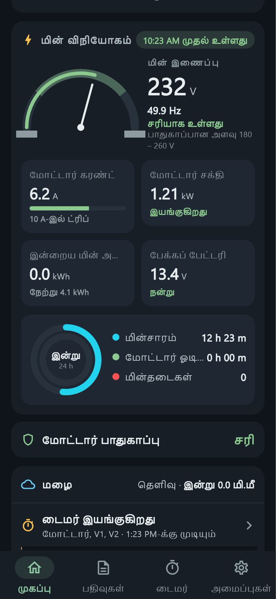
2. 3 பேஸ் மின்சாரம்
| பகுதி | என்ன காட்டும் |
|---|---|
| R · Y · B | ஒவ்வொரு பேஸின் வோல்டேஜ் (சுமார் 415 V), கரண்ட் (A). |
| பேஸ் வரிசை | R-Y-B சரி, அல்லது தலைகீழ் (சிவப்பு). தவறான பேஸ் வரிசையில் மோட்டார் தொடங்காது. |
| சமநிலையின்மை | 3 பேஸ்களுக்கு இடையிலான வேறுபாடு (%). குறைவாக இருப்பது நல்லது. |
| அதிர்வெண் | சுமார் 50 Hz. |
| ஸ்டார்ட்டர் | ஸ்டார்-டெல்டா: ஸ்டார் · 5 வி, பிறகு டெல்டா · இயங்குகிறது. நேரடி ஸ்டார்ட் (DOL, 5 HP-க்குக் கீழ்): ஸ்டார் / டெல்டா வரி இல்லை. (மோட்டார் ஸ்டார்ட்டர்.) |
| மோட்டார் சக்தி / மின் அளவு | இப்போதைய சக்தி (kW), இன்று மற்றும் நேற்றைய மின் அளவு (kWh). |
| பேக்கப் பேட்டரி | மின்தடையின்போது கண்ட்ரோலரையும் வால்வுகளையும் இயக்கும். |
| மோட்டார் கரண்ட் | சராசரி கரண்ட், டிரிப் வரம்பு. |
| இன்று வட்டம் | மின்சாரம் இருந்த நேரம், மோட்டார் ஓடிய நேரம், இன்றைய மின்தடைகள். |
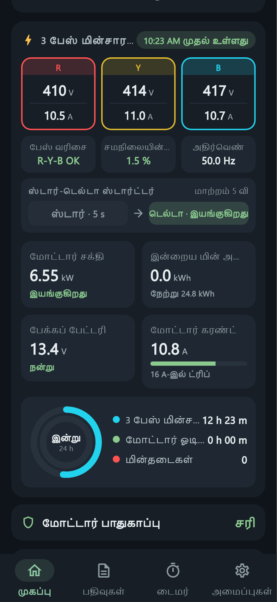
மின்தடை
டைமர் நேரத்தில் மின்சாரம் போனால், கண்ட்ரோலர் மோட்டாரை நிறுத்தும். டைமர் அதன் முடிவு நேரத்தை மாற்றாது. மின்சாரம் திரும்ப வந்ததும், சிறிது நேரம் காத்திருந்து மோட்டாரைத் தானாக மீண்டும் தொடங்கும்.
உதாரணம்: காலை 9:00 முதல் 10:00 வரை ஒரு டைமர்.
| நேரம் | என்ன நடக்கும் | போனில் எச்சரிக்கை |
|---|---|---|
| 9:00 | வால்வுகள் திறக்கும், 5 வி பிறகு மோட்டார் தொடங்கும். | டைமர் தொடங்கியது |
| 9:15 | மின்சாரம் போனது. மோட்டார் உடனே நிற்கும். வால்வுகள் திறந்தே இருக்கும் (பேக்கப் பேட்டரி). | "மின்சாரம் போனது, மோட்டார் நின்றது, நேரம் 9:15 AM" |
| 9:30 | மின்சாரம் வந்தது. கண்ட்ரோலர் காத்திருக்கும் (உதாரணம் 60 வி). | – |
| 9:31 | மோட்டார் மீண்டும் தொடங்கும். | "மின்சாரம் வந்தது, மோட்டார் தொடங்கியது, நேரம் 9:31 AM" |
| 10:00 | டைமர் வழக்கம்போல் முடியும்: மோட்டார் நிற்கும், 5 வி பிறகு வால்வுகள் மூடும். | டைமர் முடிந்தது |
- காத்திருப்பு நேரம் (30 வி முதல் 2 நிமி) மின்சாரம் அடிக்கடி போய் வரும்போது மோட்டாரைப் பாதுகாக்கும். மாற்ற: அமைப்புகள் → மோட்டார் பாதுகாப்பு → மின்தடைக்குப் பின் மறுதொடக்கம்.
- டைமர் முடியும் நேரத்திலும் மின்சாரம் இல்லையென்றால், டைமர் முடிந்து வால்வுகள் மூடும்.
- மின்தடை ஒரு பிழை அல்ல. எதையும் ரீசெட் செய்ய வேண்டியதில்லை.
- ஒவ்வொரு மின்தடையும் திரும்புதலும் நேரத்துடன் பதிவுகளில் சேமிக்கப்படும்.
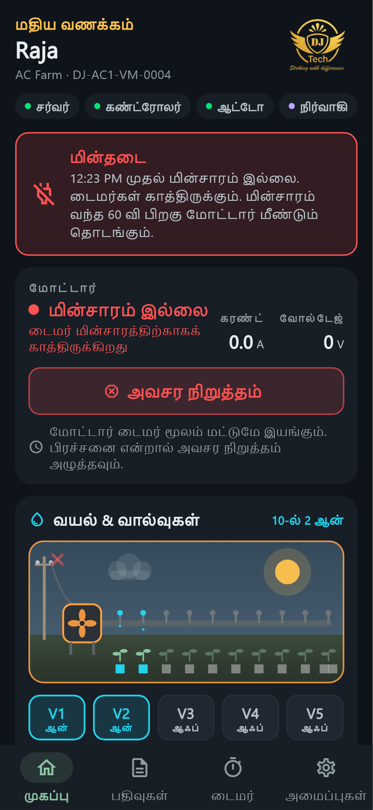
டைமர்கள்
- கீழே டைமர் தட்டி, + டைமர் சேர் தட்டவும்.
- தொடக்க நேரம்: பென்சிலைத் தட்டி நேரம் தேர்வு செய்யவும்.
- கால அளவு: மணி, நிமிடம் தேர்வு செய்யவும். "… வரை" என்று காட்டும்.
- மோட்டாரைத் தொடங்கு: இயக்கத்தில் வைக்கவும். தொட்டி அல்லது புவியீர்ப்பு மூலம் தண்ணீர் வந்தால் மட்டும் நிறுத்தவும்.
- திறக்க வேண்டிய வால்வுகளை (V1–V10) தேர்வு செய்யவும்.
- சேமி பொத்தானைத் தட்டவும்.
ஒவ்வொரு டைமருக்கும் ஆன்/ஆஃப் சுவிட்ச் மற்றும் திருத்த/நீக்க ⋮ மெனு உண்டு. தினசரி டைமர்கள் தினமும் இயங்கும்.
மோட்டார் மட்டும் பெட்டி: வால்வு தேர்வு இல்லை. டைமர் மோட்டாரை மட்டும் இயக்கும்.
வால்வுகள் மட்டும் பெட்டி: மோட்டார் சுவிட்ச் இல்லை. டைமர் வால்வுகளைத் திறக்கும்.
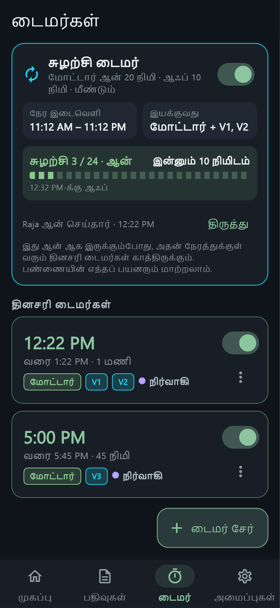

சுழற்சி டைமர்
சுழற்சி டைமர் ஒரு நேர இடைவெளிக்குள் மோட்டாரை மீண்டும் மீண்டும் ஆன், ஆஃப் செய்யும்.
உதாரணம்: காலை 6:00 முதல் மாலை 6:00 வரை, மோட்டார் ஆன் 20 நிமி, ஆஃப் 10 நிமி. ஒரு நாளில் 24 சுழற்சிகள். மோட்டார் 8 மணி நேரம் ஓடும், இடையில் ஓய்வு எடுக்கும்.
- கீழே டைமர் தட்டவும். மேலே சுழற்சி டைமர் அட்டை இருக்கும்.
- திருத்து தட்டவும் (அல்லது முதல் முறை அதன் சுவிட்சை ஆன் செய்யவும்).
- நேர இடைவெளி: தொடக்கம், முடிவு நேரம், நாட்கள் அமைக்கவும்.
- − மற்றும் + மூலம் மோட்டார் ஆன் நேரம், மோட்டார் ஆஃப் நேரம் அமைக்கவும். சுழற்சிகளின் எண்ணிக்கை தெரியும்.
- ஆன் நேரத்தில் திறக்க வேண்டிய வால்வுகளைத் தேர்வு செய்யவும். (மோட்டார் மட்டும் பெட்டியில் இது இல்லை.)
- சுழற்சி டைமரைச் சேமி தட்டவும்.
- அட்டை இப்போதைய சுழற்சியைக் காட்டும், உதாரணம் "சுழற்சி 3 / 24 · ஆன்".
- பண்ணையின் எந்தப் பயனரும் ஆன் அல்லது ஆஃப் செய்யலாம். யார், எப்போது என்று அட்டை காட்டும். பண்ணையின் எல்லோருக்கும் எச்சரிக்கை வரும்.
- இது ஆன் ஆக இருக்கும்போது, அதன் நேரத்துக்குள் வரும் தினசரி டைமர்கள் காத்திருக்கும் (இயங்காது).
- ஒவ்வொரு சுழற்சியிலும் பாதுகாப்பான வரிசை: வால்வு ஆன், 5 வி காத்திரு, மோட்டார் ஆன். மோட்டார் ஆஃப், 5 வி காத்திரு, வால்வு ஆஃப்.
- மழை நிறுத்தம், மோட்டார் டிரிப், DJ Tech சர்வீஸ் நேரத்தில் காத்திருக்கும். மின்தடையில் சுழற்சி நிற்கும். மின்சாரம் வந்ததும் (காத்திருப்பு நேரத்துக்குப் பின்) இப்போது உள்ள சுழற்சியிலிருந்து தொடரும். வெயில் மிகக் குறைந்தால், சாதாரண டைமர் போலவே மோட்டார் நிற்கும் (சோலார் குறைவு).
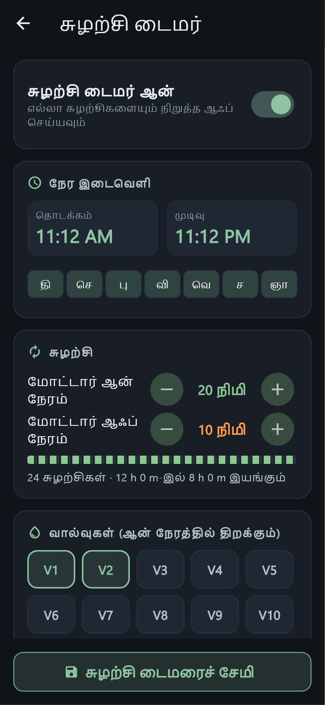
பதிவுகள்
கீழே பதிவுகள் தட்டவும். நடந்த அனைத்தும் புதியது முதலில் தெரியும்: மோட்டார் தொடக்கம்/நிறுத்தம், வால்வுகள், டைமர்கள், சுழற்சி டைமர், டிரிப், மழை, மின்தடைகள், அமைப்பு மாற்றங்கள், யார், எப்போது.
உதாரணம்: "இன்று காலை 6:00 டைமர் இயங்கியதா?" அல்லது "மின்சாரம் எப்போது போனது?" என்று பார்க்கலாம்.

அமைப்புகள் மற்றும் PIN
- அமைப்புகள் தட்டி PIN உள்ளிட்டு திற தட்டவும்.
- முதல் PIN 8888. உடனே மாற்றவும் (ஆரஞ்சு பெட்டியில் மாற்று தட்டவும்), குழந்தைகள் அல்லது மற்றவர்கள் அமைப்புகளை மாற்ற முடியாது.
| அமைப்புகளில் | பயன் |
|---|---|
| கணக்கு | உங்கள் விவரங்கள் மற்றும் வாடிக்கையாளர் ID (DJC-…). DJ Tech-ஐ அழைக்கும்போது இதைச் சொல்லவும். |
| மொழி / தோற்றம் | ஆங்கிலம் அல்லது தமிழ்; வெளிச்சம் அல்லது இருண்ட திரை. |
| இந்த கண்ட்ரோலர் | உங்கள் வகை (DC சோலார்AC சிங்கிள் பேஸ்AC த்ரீ பேஸ்), கிட். பார்க்க மட்டும். |
| மோட்டார் பாதுகாப்பு | டிரிப் வரம்புகள் (மோட்டார் பாதுகாப்பு). |
| அறிவிப்புகள் / அனுமதிகள் | எந்த எச்சரிக்கைகள், எப்படி (எச்சரிக்கை அமைப்புகள்). |
| Wi-Fi | கண்ட்ரோலரை Wi-Fi அல்லது LAN கேபிளுடன் இணைக்க. |
| வால்வு கட்டுப்பாடு | ஒற்றை = ஒரு நேரத்தில் ஒரு வால்வு. பல = பல வால்வுகள் ஒன்றாக. (மோட்டார் மட்டும் பெட்டியில் இல்லை.) |
| பயனர் மேலாண்மை | குடும்பத்தினரை அழைக்க (குடும்பத்தினரைச் சேர்த்தல்). |
| DJ Tech சேவை அனுமதி | டெக்னீஷியன் தொலைவிலிருந்து எப்போது வேலை செய்யலாம் (DJ Tech சர்வீஸ்). |
மோட்டார் பாதுகாப்பு
மோட்டாரைப் பாதுகாக்க கண்ட்ரோலர் தானாகவே நிறுத்தும். அமைப்புகள் → மோட்டார் பாதுகாப்பு.
| பாதுகாப்பு | எப்போது நிறுத்தும் |
|---|---|
| ஓவர்லோடு | கரண்ட் தாமத நேரத்தை விட அதிக நேரம் அதிகமாக இருந்தால். |
| ட்ரை ரன் | கரண்ட் குறைவாக (கிணற்றில் தண்ணீர் இல்லை) இருந்தால். |
| சோலார் குறைவு | சோலார் வோல்டேஜ் மிகக் குறைவாக இருந்தால். |
| குறைந்த மின்னழுத்தம் | மின்னழுத்தம் தாமத நேரத்தை விட அதிக நேரம் குறைவாக இருந்தால். |
| அதிக மின்னழுத்தம் | மின்னழுத்தம் தாமத நேரத்தை விட அதிக நேரம் அதிகமாக இருந்தால். |
| பேஸ் இல்லை / தலைகீழ் | ஒரு பேஸ் இல்லாவிட்டால், அல்லது பேஸ் வரிசை தவறாக இருந்தால். |
| மின்னழுத்த சமநிலையின்மை | ஒரு பேஸ் மற்றவற்றை விட மிகக் குறைவாக அல்லது அதிகமாக இருந்தால். |
| மழை | மழை பெய்தால் (வயலுக்கு இருமுறை தண்ணீர் வேண்டாம்). |
மின்தடைக்குப் பின் மறுதொடக்கம்: மோட்டார் மீண்டும் தொடங்கும் முன் காத்திருக்கும் நேரம் (30 வி முதல் 2 நிமி). பேக்கப் பேட்டரி குறைவு எச்சரிக்கை மட்டும் தரும். மோட்டாரை நிறுத்தாது.
−, + மூலம் வரம்பை மாற்றி, அனைத்தையும் சேமி தட்டவும்.
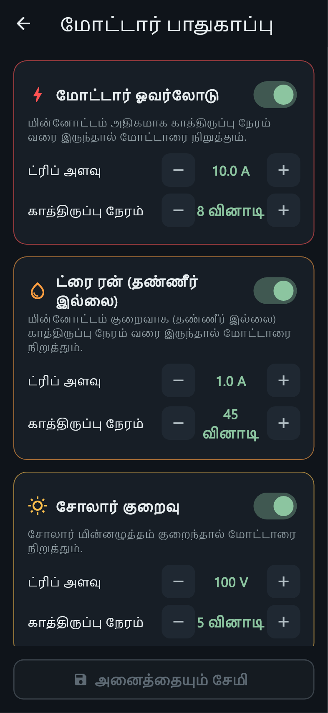
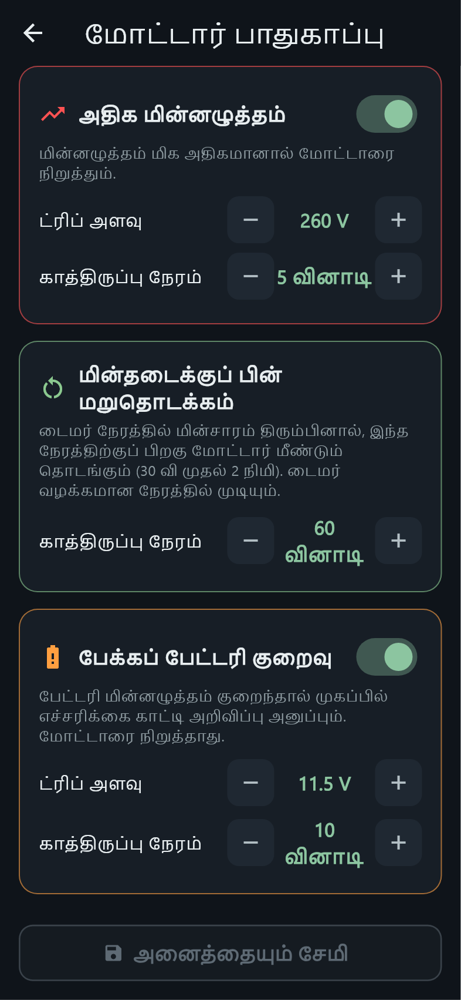
மோட்டார் ஸ்டார்ட்டர்: DOL அல்லது ஸ்டார்-டெல்டா
கண்ட்ரோலர் தயாரிக்கும்போதே DJ Tech உங்கள் மோட்டார் பேனலின் ஸ்டார்ட்டரை அமைக்கும்:
| ஸ்டார்ட்டர் | மோட்டார் | எப்படித் தொடங்கும் |
|---|---|---|
| நேரடி ஸ்டார்ட் (DOL) | 5 HP-க்குக் கீழ் | மோட்டார் உடனே தொடங்கும். முகப்பில் ஸ்டார் / டெல்டா வரி இருக்காது. |
| ஸ்டார்-டெல்டா | 5 HP மற்றும் மேல் | சில வினாடிகள் ஸ்டார்-இல் (மென்மையான தொடக்கம்), பிறகு டெல்டா (முழு சக்தி). முகப்பில் ஸ்டார் · 5 வி, பிறகு டெல்டா · இயங்குகிறது. |
உங்கள் ஸ்டார்ட்டரை அமைப்புகள் → மோட்டார் பாதுகாப்பு-இல் பார்க்கலாம். மோட்டார் அல்லது பேனலை மாற்றினால், நிர்வாகி மட்டுமே மாற்ற முடியும், இரண்டு சரிபார்ப்புகளுடன்:
- அமைப்புகள் → மோட்டார் பாதுகாப்பு → ஸ்டார்-டெல்டா ஸ்டார்ட்டர் → மாற்று தட்டவும்.
- ஸ்டார்-டெல்டா ஸ்டார்ட்டர் அல்லது நேரடி ஸ்டார்ட் (DOL) தேர்வு செய்யவும்.
- − மற்றும் + மூலம் ஸ்டார் நேரம் அமைக்கவும் (அனுமதி: 2 முதல் 15 வினாடி). அடுத்து தட்டவும்.
- ஆப் இப்போது: …, புதியது: … என்று காட்டும். சரிபார்த்து மாற்று தட்டவும்.
இது உடனே சேமிக்கப்படும் ("அனைத்தையும் சேமி" உடன் அல்ல), பதிவுகளில் எழுதப்படும்.
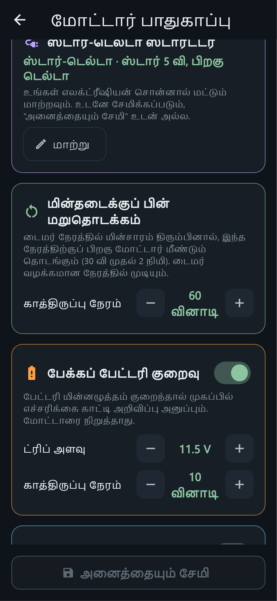
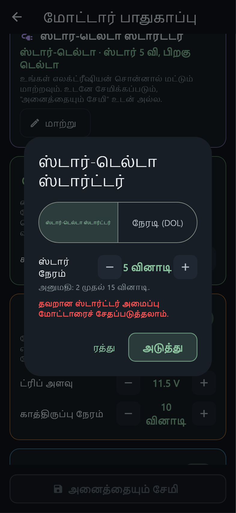
எச்சரிக்கை அமைப்புகள்
அமைப்புகள் → அறிவிப்புகள். எச்சரிக்கை 3 வழிகளில் வரும். ஒவ்வொன்றுக்கும் தனி சுவிட்ச், ஒலி, அதிர்வு சுவிட்ச் உண்டு:
- ஆப் திறந்திருக்கும்போது – ஒலியுடன் பேனர்.
- திரை அணைந்திருக்கும்போது – திரை ஒளிர்ந்து பூட்டுத் திரையில் எச்சரிக்கை.
- மற்ற ஆப்களின் மேல் – WhatsApp, YouTube மேல் பாப்-அப்.
மின்தடை சுவிட்ச் "மின்சாரம் போனது / வந்தது" எச்சரிக்கைகளை ஆன் அல்லது ஆஃப் செய்யும்.
சோதிக்க ஒலி சோதனை அல்லது 10 வினாடியில் சோதனை தட்டவும் (பிறகு போனைப் பூட்டவும்).

குடும்பத்தினரைச் சேர்த்தல்
ஒரு கண்ட்ரோலருக்கு 3 போன்கள் வரை: நிர்வாகி + 2 பயனர்கள். நிர்வாகி மட்டுமே அழைக்கவோ நீக்கவோ முடியும்.
- நிர்வாகி: அமைப்புகள் → பயனர் மேலாண்மை → பயனரை அழை.
- அவரது பெயர், மின்னஞ்சல் உள்ளிடவும் (மொபைல் எண் விருப்பம்) → அழைப்பை உருவாக்கவும்.
- QR மற்றும் அழைப்புக் குறியீடு தோன்றும். QR-ஐக் காட்டவும், அல்லது பகிர் தட்டி WhatsApp-ல் அனுப்பவும். ஒருமுறை மட்டும், 10 நிமிடம் செல்லும்.
- புதிய பயனர்: ஆப்பை நிறுவி → எனக்கு அழைப்பு உள்ளது → QR ஸ்கேன் அல்லது குறியீடு உள்ளிடவும்.


DJ Tech சர்வீஸ்
DJ Tech டெக்னீஷியன் உங்கள் மோட்டார், வால்வுகளைச் சோதிக்கலாம் (சர்வீஸ் முறை). பண்ணையில் டெக்னீஷியன் கண்ட்ரோலரில் உள்ள குறியீட்டை ஸ்கேன் செய்வார். தொலைவிலிருந்து என்றால், அமைப்புகள் → DJ Tech சேவை அனுமதி-ல் உங்கள் தேர்வைப் பொறுத்தது:
| எப்போதும் அனுமதி | எப்போது வேண்டுமானாலும் தொடங்கலாம். தொடக்கம், முடிவில் எச்சரிக்கை வரும். |
| முதலில் என்னிடம் கேள் | முகப்பில் அனுமதி / மறு அட்டை தோன்றும். 15 நிமிடத்துக்குள் பதிலளிக்கவும். |
| நிறுத்தம் | பண்ணையில் மட்டும் சர்வீஸ். |
சர்வீஸ் நேரத்தில் ஆப் "சேவை முறை இயக்கப்பட்டது" என்று காட்டி பூட்டப்படும். டைமர்கள் நின்று, சர்வீஸ் முடிந்ததும் மீண்டும் இயங்கும். அனைத்தும் பதிவாகும்.


அவசர நிறுத்தம்
ஏதாவது தவறு என்றால் (குழாய் உடைப்பு, தவறான வால்வு, வயலில் ஆட்கள்), முகப்பில் சிவப்பு அவசர நிறுத்தம் தட்டி உறுதி செய்யவும்.
கண்ட்ரோலர் முதலில் மோட்டாரை நிறுத்தி, 5 வினாடி காத்திருந்து, பிறகு வால்வுகளை மூடும் – உங்கள் குழாய்களுக்குப் பாதுகாப்பான வரிசை. அடுத்த டைமர் வழக்கம்போல் இயங்கும்.
மின்தடையின்போது அவசர நிறுத்தம் தட்டினால், மறுதொடக்கமும் ரத்தாகும்: மின்சாரம் வந்ததும் மோட்டார் தொடங்காது.
பிரச்சனைகளும் தீர்வுகளும்
| பிரச்சனை | என்ன செய்வது |
|---|---|
| எச்சரிக்கை வரவில்லை | முகப்பில் சிவப்பு பட்டையைத் தட்டவும், அல்லது அமைப்புகள் → அனுமதிகள். அறிவிப்புகள், "பின்னணியில் இயங்க" அனுமதிக்கவும். Silent / Do Not Disturb சரிபார்க்கவும். |
| "கண்ட்ரோலர்" புள்ளி பச்சை இல்லை | பெட்டிக்கு இணையம் இல்லை. பண்ணையில் மின்சாரம், Wi-Fi ரவுட்டரைச் சரிபார்க்கவும். நெட்வொர்க் மாற்ற அமைப்புகள் → Wi-Fi. |
| மோட்டார் தானாக நின்றது | முகப்பு → மோட்டார் பாதுகாப்பு, பதிவுகள் பார்க்கவும். காரணம் தெரியும் (ஓவர்லோடு, ட்ரை ரன், சோலார் குறைவு, மழைஓவர்லோடு, ட்ரை ரன், குறைந்த / அதிக மின்னழுத்தம், மழைஓவர்லோடு, ட்ரை ரன், குறைந்த / அதிக மின்னழுத்தம், பேஸ் இல்லை, பேஸ் தலைகீழ், சமநிலையின்மை, மழை). |
| மோட்டார் "மின்சாரம் இல்லை" என்று காட்டுகிறது | EB மின்தடை. எதுவும் செய்ய வேண்டாம். டைமர் நேரம் இன்னும் இருந்தால், மின்சாரம் வந்ததும் மோட்டார் தானாகத் தொடங்கும். |
| "பேஸ் தலைகீழ்" | பேஸ் வரிசை மாறியுள்ளது (உதாரணம் EB வேலைக்குப் பின்). இரண்டு பேஸ்களை மாற்ற எலக்ட்ரீஷியனை அழைக்கவும். சரியாகும் வரை மோட்டார் தொடங்காது. |
| தினசரி டைமர் இயங்கவில்லை | சுழற்சி டைமர் ஆன் ஆக உள்ளதா? அதன் நேரத்துக்குள் வரும் தினசரி டைமர்கள் காத்திருக்கும். மழை நிறுத்தம், பதிவுகளையும் பார்க்கவும். |
| அமைப்புகள் PIN மறந்துவிட்டது | உங்கள் வாடிக்கையாளர் ID உடன் DJ Tech-ஐ அழைக்கவும். |
| புதிய போன் | நிர்வாகியிடம் புதிய அழைப்பு கேட்கவும். நீங்களே நிர்வாகி, போன் தொலைந்தது என்றால் DJ Tech-ஐ அழைக்கவும். |
| ஆப் பழையது | ஆப் "புதிய பதிப்பு" என்று காட்டும் – djtechinnovation.in/app-லிருந்து மீண்டும் பதிவிறக்கி பழையதன் மேல் நிறுவவும். உங்கள் தரவு அப்படியே இருக்கும். |